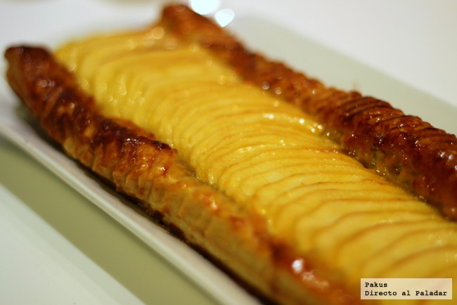

- Leche.............................300 ml
- Azúcar............................60 gr
- Yemas.............................2
- Vainilla..........................1/2 vaina
- Nata..............................200 ml
- Harina de maíz....................40 gr
- Huevo.............................1
Para la crema pastelera, pon casi toda la leche (reserva un poco) a cocer junto con la nata
y la vaina de vainilla abierta. Deja que hierva.
Coloca el azúcar y la harina de maíz refinada en un bol y mezcla. Vierte la leche reservada anteriormente y mezcla
hasta que se diluyan los grumos de harina. Incorpora las yemas y el huevo y bate hasta que quede una masa homogénea.
Leer más...
Fuente: Hogar Manía Goxua.

- Pistachos para la crema de pistachos.........100 g
- Azúcar para la crema de pistachos............50 g
- Mantequilla para la crema de pistachos.......50 g
- Harina de trigo para la crema de pistachos...10 g
- Huevo para la crema de pistachos.............1
- Esencia de vainilla un chorrito, para la crema de pistachos
- Manzana......................................1
- Hojaldre una lámina
- Azúcar para la tarta.........................50 g
- Mantequilla para la tarta....................50 g
- Huevo para la tarta..........................1
- Mermelada de albaricoque para barnizar
Con ayuda de un mortero, vamos machacando los pistachos pelados para reducirlos a harina. Mezclamos el huevo
con el azúcar en un bol hasta que blanquee, y vamos añadiendo sucesivamente, la harina de pistacho, la harina de trigo y la mantequilla.
Trabajamos hasta obtener una masa bien espesa.
Leer más...
Fuente: Directo al paladar Banda de Manzana.